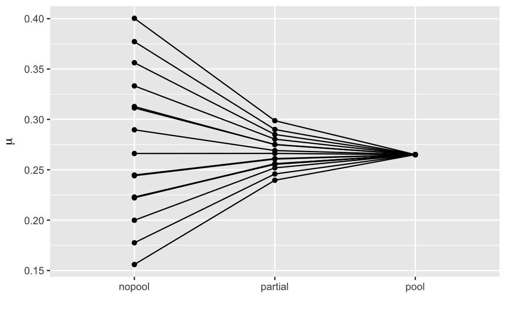
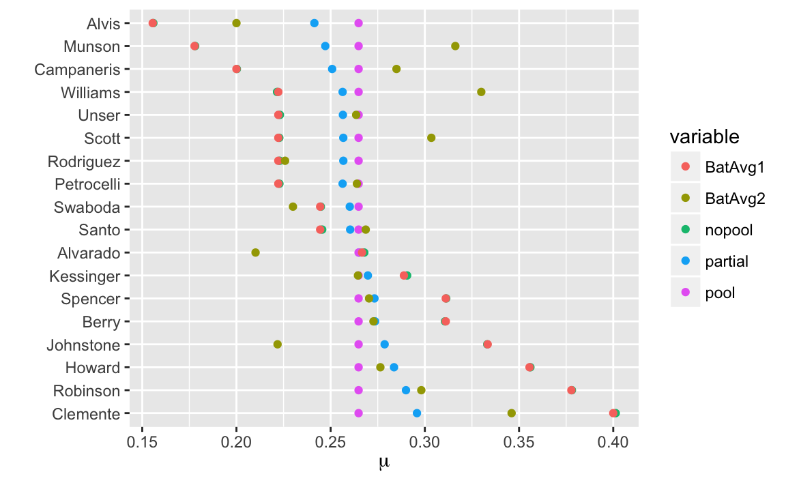
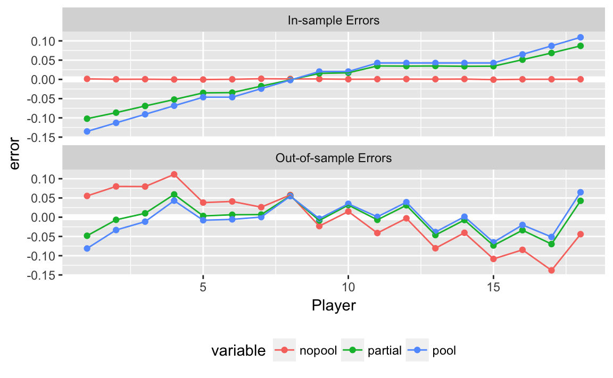

18 Shrinkage and Hierarchical Models
18.1 Hierarchical Models
- Hierarchical models: often groups of parameters, \(\{\theta_1, \dots, \theta_J\}\), are related.
- E.g. countries, states, counties, years, etc. Even the regression coefficients, \(\beta_1, \dots, \beta_k\) seen the in the [Shrinkage and Regularization] chapter.
- We can treat those \(\theta_j\) as drawn from a population distribution, \(\theta_j \sim p(\theta)\).
- The prior distribution \(p(\theta)\) is called a hyperprior and its parameters are hyperparameters
Exchangeability:
- parameters \((\theta_1, \dots, \theta_J)\) are exchangeable if \(p(\theta_1, \dots, \theta_J)\) don’t depend on the indexes.
- i.i.d. models are a special case of exchangeability.
18.2 Baseball Hits
Efron and Morris (1975) analyzed data from 18 players in the 1970 season. The goal was to predict the batting average of these 18 players from their first 45 at-bats for the remainder of the 1970 season.
The following example is based on Carpenter, Gabry, and Goodrich (2017) and the rstanarm vignette Hierarchical Partial Pooling for Repeated Binary Trials.
The hitting data used in Efron and Morris (1975) is included in rstanarm as rstanarm:
data("bball1970", package = "rstanarm")
bball1970 <-
mutate(bball1970,
BatAvg1 = Hits / AB,
BatAvg2 = RemainingHits / RemainingAB)
head(bball1970)
#> Player AB Hits RemainingAB RemainingHits BatAvg1 BatAvg2
#> 1 Clemente 45 18 367 127 0.400 0.346
#> 2 Robinson 45 17 426 127 0.378 0.298
#> 3 Howard 45 16 521 144 0.356 0.276
#> 4 Johnstone 45 15 275 61 0.333 0.222
#> 5 Berry 45 14 418 114 0.311 0.273
#> 6 Spencer 45 14 466 126 0.311 0.270Let \(y_i\) be the number of hits in the first 45 at bats for player \(i\), \[ \begin{aligned}[t] y_i & \sim \dbin(45, \mu_i), \end{aligned} \] where \(\mu_i \in (0, 1)\) is the player-specific batting average. Priors will be placed on the log-odds parameter, \(\eta \in \R\), \[ \begin{aligned}[t] \mu_i &\sim \frac{1}{1 + \exp(-\eta_i)} . \\ \end{aligned} \]
This example considers three ways of modeling \(\mu_i\):
Complete Pooling: All players have the same batting average parameter. \[ \eta_i = \eta . \] The common (log-odds) batting average is given a weakly informative prior, \[ \eta \sim \dnorm(0, 2.5) \] On the log odds scale, this places 95% of the probability mass between 0.7 and 99.3 on the proportion scale.
Non-pooled: Each players (log-odds) batting average is independent, with each assigned a separate weak prior. \[ \begin{aligned}[t] \eta_i &\sim \dnorm(0, 2.5) \end{aligned} \]
Partial-pooling: Each player has a separate (log-odds) batting average, but these batting average parameters are drawn from a common normal distribution. \[ \begin{aligned}[t] \eta_i &\sim \dnorm(0, \tau) \\ \tau &\sim \dnorm(0, 1) \end{aligned} \]
bball1970_data <- list(
N = nrow(bball1970),
k = bball1970$AB,
y = bball1970$Hits,
k_new = bball1970$RemainingAB,
y_new = bball1970$RemainingHits
)Create a list to store models:
prelist(class = “stan”)list(list(name = “code”, attribs = list(), children = list(“/* Binomial Model (No pooling)A binomial model for \(i = 1, \\dots, N\), no pooling:\[\n p(y_i | n_i, \\mu_i) &\\sim \\mathsf{Binomial}(y_i | n_i, \\mu_i) \\\\\n \\mu_i &= \\logit^{-1}(\\eta_i) \\\\\n p(\\eta_i) &\\sim \\mathsf{Normal}^+(0, 10)\n \]/quantities {int y_rep[N];vector[N] log_lik;vector[N] log_lik_new;vector<lower = 0., upper = 1.>[N] mu;mu = inv_logit(eta);for (n in 1:N) {y_rep[n] = binomial_rng(k[n], mu[n]);log_lik[n] = binomial_logit_lpmf(y[n] | k[n], eta[n]);log_lik_new[n] = binomial_logit_lpmf(y_new[n] | k_new[n], eta[n]);}}”)))
prelist(class = “stan”)list(list(name = “code”, attribs = list(), children = list(“/* Binomial ModelA binomial model for \(i = 1, \\dots, N\), with complete pooling\[\n \\begin{aligned}[t]\n p(y_i | n_i, \\mu) &\\sim \\mathsf{Binomial}(n_i, \\mu) \\\\\n \\mu &= \\logit^{-1}(\\eta) \\\\\n p(\\eta) &\\sim \\mathsf{Normal}^+(0, 10)\n \\end{aligned}\n \]/quantities {int y_rep[N];vector[N] log_lik;vector[N] log_lik_new;real<lower = 0., upper = 1.> mu;mu = inv_logit(eta);for (n in 1:N) { //y_rep[n] = binomial_rng(k[n], mu);log_lik[n] = binomial_logit_lpmf(y[n] | k[n], eta);log_lik_new[n] = binomial_logit_lpmf(y_new[n] | k_new[n], eta);}}”)))
prelist(class = “stan”)list(list(name = “code”, attribs = list(), children = list(“/* Binomial ModelA binomial model for \(i = 1, \\dots, N\), with partial pooling\[\n \\begin{aligned}[t]\n p(y_i | n_i, \\mu_i) &\\sim \\mathsf{Binomial}(y_i | n_i, \\mu_i) \\\\\n \\mu_i &= \\logit^{-1}(\\eta_i) \\\\\n p(\\eta_i | \\tau) &\\sim \\mathsf{Normal}(alpha, \\tau) \\\\\n p(\\tau) &\\sim \\mathsf{Normal}^+(0, 1) \\\\\n p(alpha) & \\sim \\mathsf{Normal}(0, 2.5) \\\\\n \\end{aligned}\n \]/quantities {int y_rep[N];vector[N] log_lik;vector[N] log_lik_new;vector<lower = 0., upper = 1.>[N] mu;mu = inv_logit(eta);for (n in 1:N) { //y_rep[n] = binomial_rng(k[n], mu[n]);log_lik[n] = binomial_logit_lpmf(y[n] | k[n], eta[n]);log_lik_new[n] = binomial_logit_lpmf(y_new[n] | k_new[n], eta[n]);}}”)))
Draw a sample for all three models:
For each model calculate the posterior mean of \(\mu\) for each player:
bball1970 <-
map2_df(names(fits), fits,
function(nm, fit) {
mu <- broom::tidy(fit) %>%
filter(str_detect(term, "^mu"))
if (nrow(mu) == 1) {
out <- tibble(estimate = rep(mu$estimate, 18L))
} else {
out <- select(mu, estimate)
}
out$model <- nm
out$.id <- seq_len(nrow(out))
out
}) %>%
spread(model, estimate) %>%
bind_cols(bball1970)The partially pooled estimates are shrunk towards the overall average, and are between the no-pooling and pooled estimates.
select(bball1970,
Player, nopool, partial, pool) %>%
mutate(Player = factor(Player, levels = Player)) %>%
gather(variable, value, -Player) %>%
ggplot(aes(y = value, x = factor(variable), group = Player)) +
geom_point() +
geom_line() +
labs(x = "", y = expression(mu))
We can plot the actual batting averages (BatAvg1 and BatAvg2) and the model estimates:
select(bball1970,
Player, nopool, partial, pool, BatAvg1, BatAvg2) %>%
mutate(Player = factor(Player, levels = Player)) %>%
gather(variable, value, -Player) %>%
ggplot(aes(y = Player, x = value, colour = variable)) +
geom_point() +
labs(x = expression(mu), y = "")
The estimates of the no-pooling model is almost exactly the same as BatAvg1.
The out-of-sample batting averages BatAvg2 show regression to the mean.
For these models, compare the overall out-of-sample performance by calculating the actual average out-of-sample log-pointwise predictive density (lppd), and the expected lppd using LOO-PSIS. The LOO-PSIS estimates of the out-of-sample lppd are optimistic. However, they still show the pooling and partial estimates as superior to the no-pooling estimates. The actual out-of-sample average lppd for the partial pooled model is the best fitting.
map2_df(names(fits), fits,
function(nm, fit) {
loo <- loo(extract_log_lik(fit, "log_lik"))
ll_new <- rstan::extract(fit)[["log_lik_new"]]
tibble(model = nm,
loo = loo$elpd_loo / bball1970_data$N,
ll_out = mean(log(colMeans(exp(ll_new)))))
})
#> # A tibble: 3 x 3
#> model loo ll_out
#> <chr> <dbl> <dbl>
#> 1 nopool -3.23 -4.62
#> 2 pool -2.58 -4.06
#> 3 partial -2.60 -4.01To see why this is the case, plot the average errors for each observation in- and out-of-sample. In-sample for the no-pooling model is zero, but it over-estimates (under-estimates) the players with the highest (lowest) batting averages in their first 45 at bats—this is regression to the mean. In sample, the partially pooling model shrinks the estimates towards the mean and reducing error. Out of sample, the errors of the partially pooled model are not much different than the no-pooling model, except that the extreme observations have lower errors.
select(bball1970,
Player, nopool, partial, pool, BatAvg1, BatAvg2) %>%
mutate(Player = as.integer(factor(Player, levels = Player))) %>%
gather(variable, value, -Player, -matches("BatAvg")) %>%
mutate(`In-sample Errors` = value - BatAvg1,
`Out-of-sample Errors` = value - BatAvg2) %>%
select(-matches("BatAvg"), -value) %>%
gather(sample, error, -variable, -Player) %>%
ggplot(aes(y = error, x = Player, colour = variable)) +
geom_hline(yintercept = 0, colour = "white", size = 2) +
geom_point() +
geom_line() +
facet_wrap(~ sample, ncol = 1) +
theme(legend.position = "bottom")
Extensions:
- Use a beta distribution for the prior of \(\mu_i\). How would you specify the prior beta distribution so that it is uninformative?
- If you used the beta distribution, how would you specify the beta distribution as a function of the mean?
- The lowest batting average of the modern era is approximately 0.16 and the highest is approximately 0.4. Use this information for an informative prior distribution.
- There may be some truly exceptional players. Model this by replacing the normal prior for \(\eta\) with a wide tailed distribution.
- The distribution of batting averages may be asymmetric - since there may be a few great players, but a player can only be so bad before they are relegated to the minor league. Find a skewed distribution to use as a prior.
18.2.1 References
- Albert, Jim. Revisiting Efron and Morris’s Baseball Study Feb 15, 2016
- Bob Carpenter. Hierarchical Bayesian Batting Ability, with Multiple Comparisons. November 4, 2009.
- John Kruschke. Shrinkage in multi-level hierarchical models. November 27, 2012.